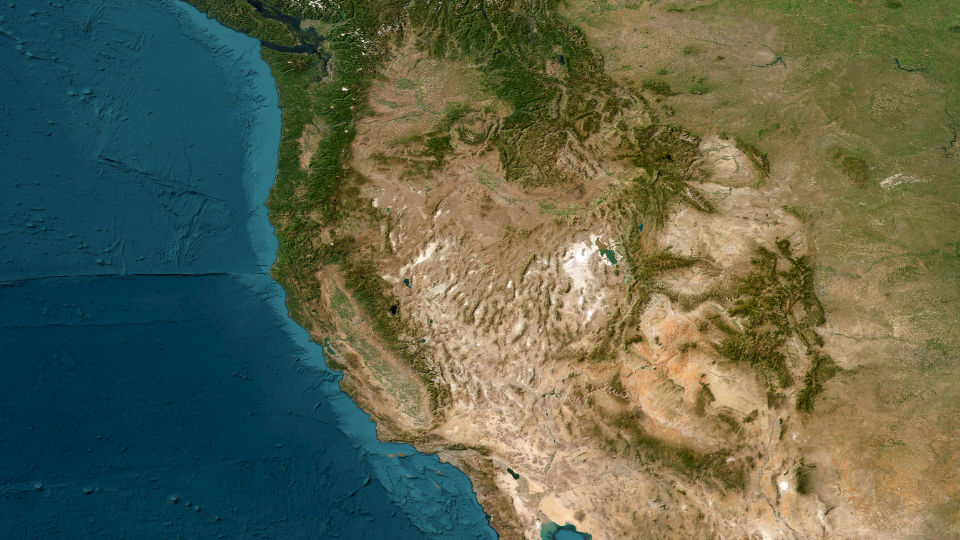
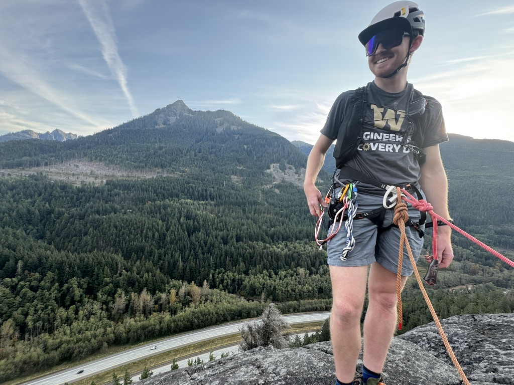

Consulting
Hydrometeorological support for teams working with weather, snow, water, and environmental data.
I'm an atmospheric scientist and hydrologist studying weather, water, and climate, with a focus on the Western United States. I help businesses and organizations make better use of environmental data.
Hydrometeorological support for teams working with weather, snow, water, and environmental data.

Explore interactive radiosonde soundings and fire-weather data tools.

Mountain days on skis, bikes, trails, and rock.